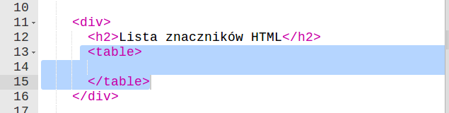

Wstęp
Podczas tych zajęć zobaczysz, jak łatwo wstawić film na Twoją stronę i do czego mogą przydać się tabele.
Tabele
Zadania do wykonania
-
Na chwilę zostawmy naszą nową podstronę i dodajmy kolejną, która będzie opisywać semestr związany z HTML i CSS.
Dodamy do niej tabele, w której będą zamieszczone podstawowe znaczniki, jakich się nauczyliśmy wraz z ich opisami.
Tabele dodaje się znacznikiem
table:
-
Każda tabela ma wiersze, wiersze dodaje się znacznikiem
tr. Wewnątrz wierwszy dodaje się komórki, można to zrobić za pomocą znacznikatd: -
Póki co dodaliśmy jeden wiersz nagłówkowy i nie wygląda on ładnie. Dodajmy jeszcze jeden, z przykładową treścią. Jeśli nie wiesz czego może dotyczyć Twoja tabela, zapytaj kolegów albo prowadzącego zajęcia:
-
Tabela się rozrasta, ale wciąż nie wygląda dobrze. Dodajmy style:
-
Zauważyłeś coś nowego? Właściwość
border-collapse: collapse;informuje przeglądarkę, żeby wyświetlała wspólną krawędź dla dwóch sąsiadujących ze sobą komórek. Inaczej widziałbyś grubsze krawędzie wewnątrz tabeli.Wiersz nagłówkowy można wyróżnić, zmieniając znaczniki komórek na znacznik komórki nagłówkowej -
th:Teraz wiersz nagłówka jest pogrubiony i wycentrowany. Możesz dodać do niego style, jeśli nie wygląda tak jakbyś tego chciał.
Zapisz swój projekt
Osadzanie filmów
Zadania do wykonania
-
Czasami na stronie internetowej znajdują się filmy. Np. jeżeli prowadzisz stronę o klubie piłkarskim, mogą to być skróty ostatnich spotkań. Jeżeli jesteś fanem gier - wideorecenzje, natomiast strona o kotach z pewnością będzie ciekawsza, jeśli umieścisz na niej film prezentujący opisywane rasy.
Na naszej przykładowej stronie umieścimy film z serwisu youtube.com prezentujący możliwości Scratcha.
-
Aby umieścić film, wejdź na stronę youtube.com, wyszukaj interesujący Cie film i odnajdź taką opcję bezpośrednio pod filmem:
Skopiuj tekst, który znajduje się w polu pod opcją "Umieść na stronie".
-
Teraz przejdź do trinketa i na swojej stronie wklej skopiowaną zawartość w miejscu, gdzie chciałbyś umieścić film:
-
Szerokość i wysokość odtwarzacza możesz zmienić zmieniając wartości
heightiwidthelementuiframez filmem, tak samo jak w przypadku grafik: -
Wystarczy kliknąć na strzałkę i film zacznie się odtwarzać, proste, prawda?
W podobny sposób możesz osadzić również filmy z serwisu vimeo.com i wielu innych, a także aplikacje stworzone w Scratchu.
Zapisz swój projekt
Treść twojej nowej podstrony
Wykorzystaj zdobyte dzisiaj umiejętności na swojej stronie internetowej. Jeśli nie wiesz, co możesz umieścić w tabeli albo jaki film osadzić na stronie, zapytaj prowadzącego zajęcia lub kolegów, oni z pewnością Ci pomogą!
Na dzisiejszych zajęciach poznałeś także nowe kolory, jeśli dotychczasowy wygląd Twojej strony Ci się nie podoba, zmień go używając nowych kolorów.
Wiesz, że tabela może czasami zastąpić listę? Twoja strona może zawierać kilka filmów i opisów do nich, każdy film i opis znajdowałby się w jednym wierszy tabeli.
Tymczase nasza strona przeszła mały remont, oto jak teraz wygląda!